Educational support
Provide scholarships, tools, and assistance that help students and emerging learners continue their education with confidence and hope.
The Maryam Mottaghi Foundation was established to carry forward the spirit of a woman whose life was marked by selflessness, faith, resilience, and devotion to others. Through educational support, compassionate outreach, and programs rooted in dignity and hope, the foundation seeks to uplift lives in her honor.
Inspired by Maryam Mottaghi’s life of sacrifice and love, the foundation is dedicated to supporting individuals facing barriers to education, stability, and opportunity. Our work is guided by service, integrity, and the belief that every human being deserves encouragement, dignity, and the chance to flourish.
Provide scholarships, tools, and assistance that help students and emerging learners continue their education with confidence and hope.
Create pathways for guidance, belonging, and practical support for those navigating personal and financial barriers.
Honor a life of devotion and sacrifice by advancing compassionate work that reflects her generosity, humility, and faith.
Maryam Mottaghi was a woman of deep faith, extraordinary tenderness, and quiet strength. She devoted her life to her family and to the well-being of others, carrying burdens with grace and offering love without condition. This foundation exists not only in her memory, but in continuity with the values she lived every day.
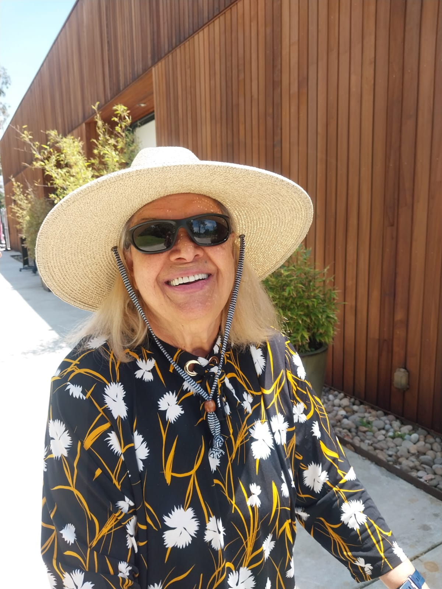
Maryam’s life was defined by sacrifice, service, and an unwavering capacity to love. She uplifted others even through hardship, and her presence brought comfort, warmth, and dignity wherever she went. The foundation was created so that her light would continue to reach people she never had the chance to meet.
In honoring her, we hope to support those who need practical help, encouragement, and access to opportunity — especially in educational settings where one act of support can change the course of a life.
Maryam’s story is one of brilliance and resilience: a self-taught artist and teacher, a student and professional, a mother who rebuilt life across countries, and a devoted Bahá’í whose home and heart remained open to those in need.
Maryam Mottaghi was born in Yazd, Iran, to Sayed Yahya Mottaghi and Zahra Mottaghi. From a young age, she was known for her curiosity and her desire to learn, teach, assist, and contribute to the well-being of those around her.
She possessed a remarkable, self-taught talent for sewing and fashion. Without formal patterns or training, she could recreate designs by sight and often improve upon them. Guided by generosity, she shared her handmade creations with family, friends, and neighbors facing hardship.
After high school, Maryam established a government-recognized fashion institute where she served as administrator, instructor, and diploma provider for her students. She later pursued degrees in Meteorology and Business Management at the University of Tehran before working as a meteorologist at Mehrabad International Airport and expanding into human resources.
Following her marriage to Jamshid Taefi, Maryam played a pivotal role in their family’s journey. She supported their livelihood while encouraging Jamshid to pursue higher education, helping make possible his degree in accounting and later government work.
In the aftermath of the revolution, Bahá’ís faced escalating persecution. When Maryam lost her job, she returned to sewing and did what she had always done: she found a way to provide. When her children’s future in Iran became increasingly uncertain, Maryam made the selfless decision to leave behind everything she knew in search of safety and opportunity for her family.
During the family’s perilous journey from Iran toward Pakistan, Maryam’s courage became the bedrock of their survival. When danger and uncertainty surrounded them, she remained resolute, protective, and determined to keep her family together.
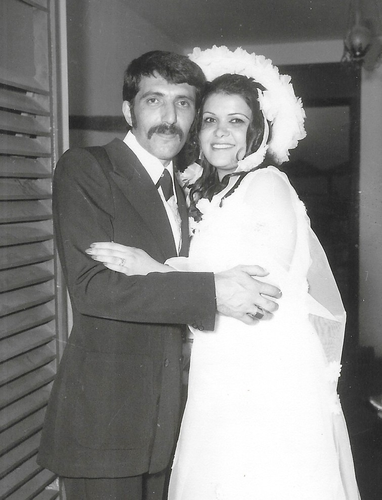
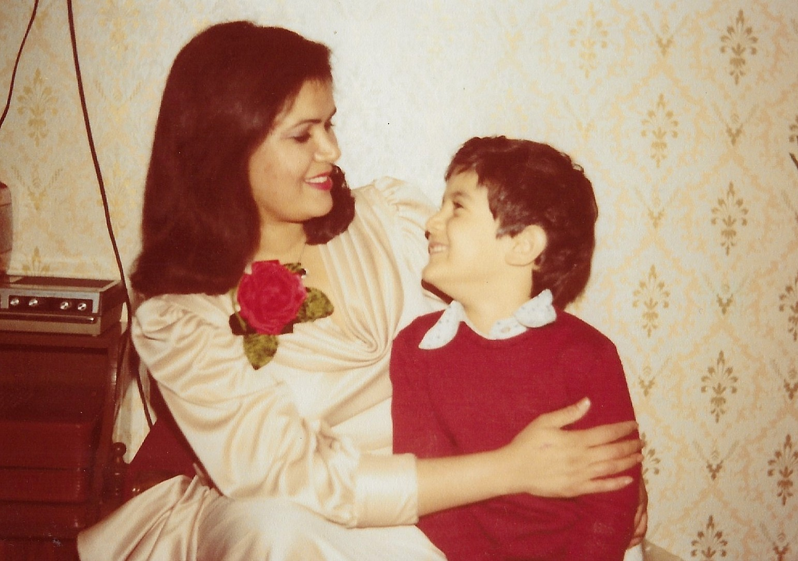
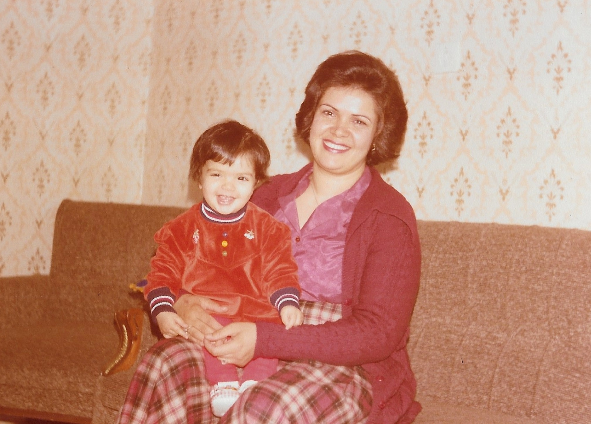
After 14 months of sacrifice in Pakistan, the family received sponsorship to immigrate to America in 1987. Within days of arriving, Maryam began working multiple jobs to support her family. She enrolled in night school to strengthen her communication skills and begin again in a new country.
While searching for a fashion institute in Pasadena, Maryam became intrigued by computer classes and enrolled at Pasadena City College. She later continued her studies at California State University, Los Angeles, earning a double degree in Computer Information Systems and Technology in 1998. She then moved into teaching, sharing the knowledge she had worked so hard to gain.
When her granddaughter was born and her son’s young family moved to California, Maryam made another selfless decision: she stepped away from her career and devoted herself to caregiving, providing stability, love, and support so the next generation could flourish.
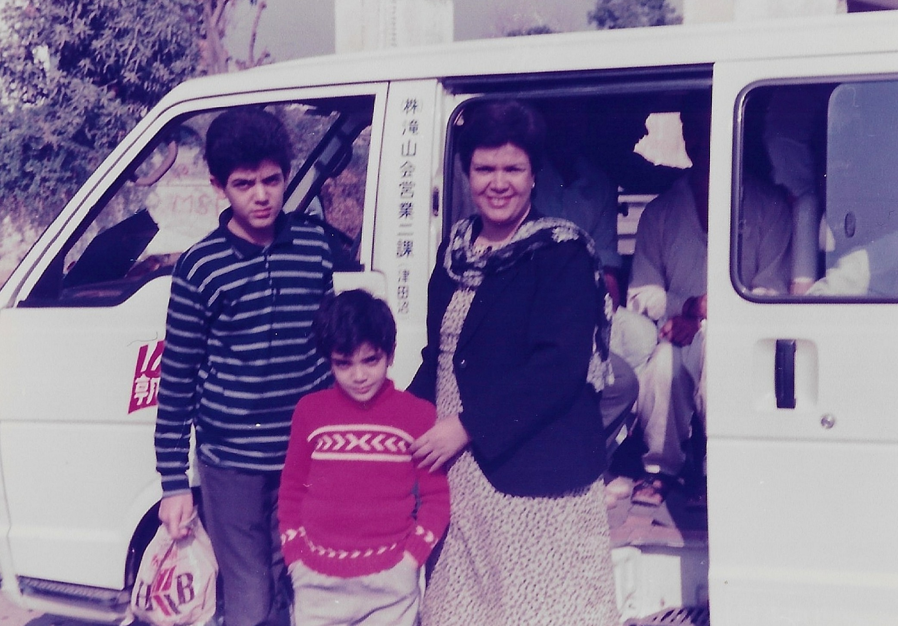
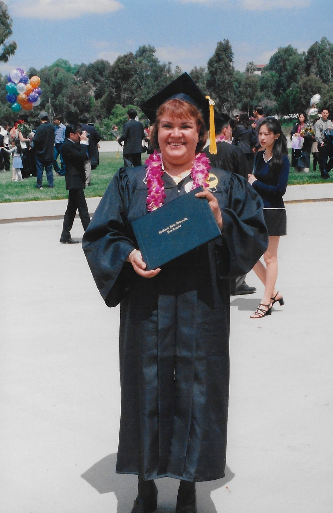
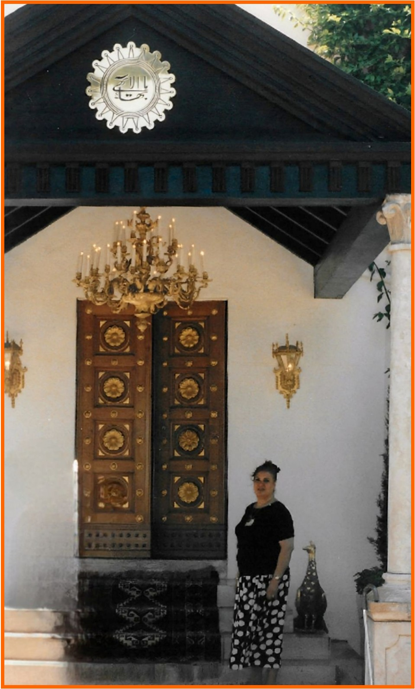
Maryam remained steadfast in her devotion to the teachings of Bahá’u’lláh. She hosted Bahá’í deepening classes, served on the Local Spiritual Assembly, supported community gatherings, and opened her home for study circles, feasts, and fellowship.
Her compassionate spirit endeared her to family, friends, neighbors, coworkers, and community members. People facing hardship could rely on her love and prayers. She was known for selflessly reciting the “Is there any remover of difficulties?” prayer hundreds of times for those in need, offering each prayer with sincerity, compassion, and hope.
Maryam Mottaghi lived with grace, passion, courage, fierce determination, deep love, and abiding dedication to others. She gave of herself joyfully, with the love of God written in her heart.
A small collection of images honoring Maryam’s joy, faith, family, and love of natural beauty. This gallery can continue to grow over time.
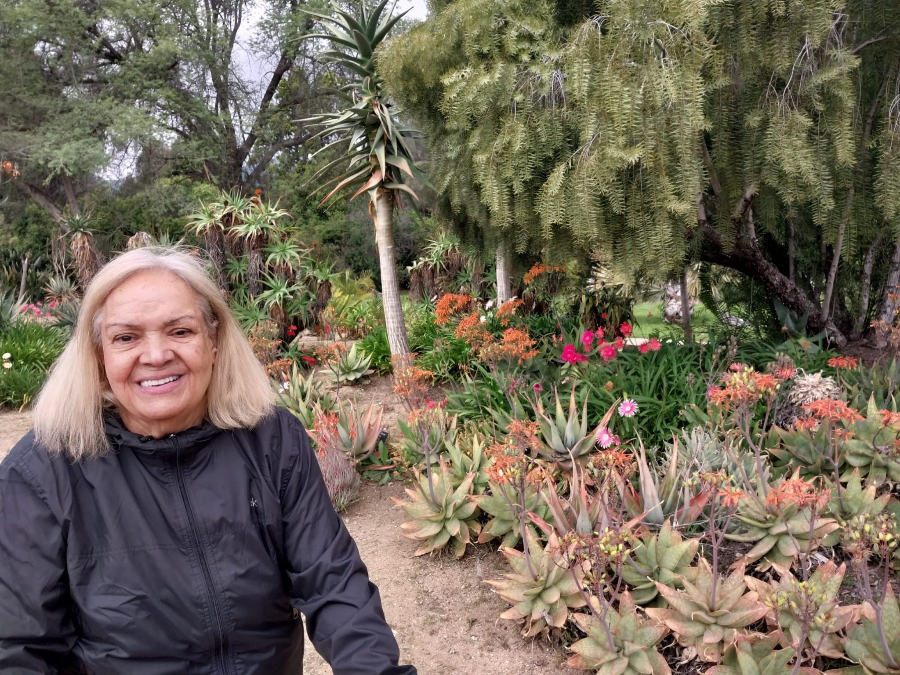
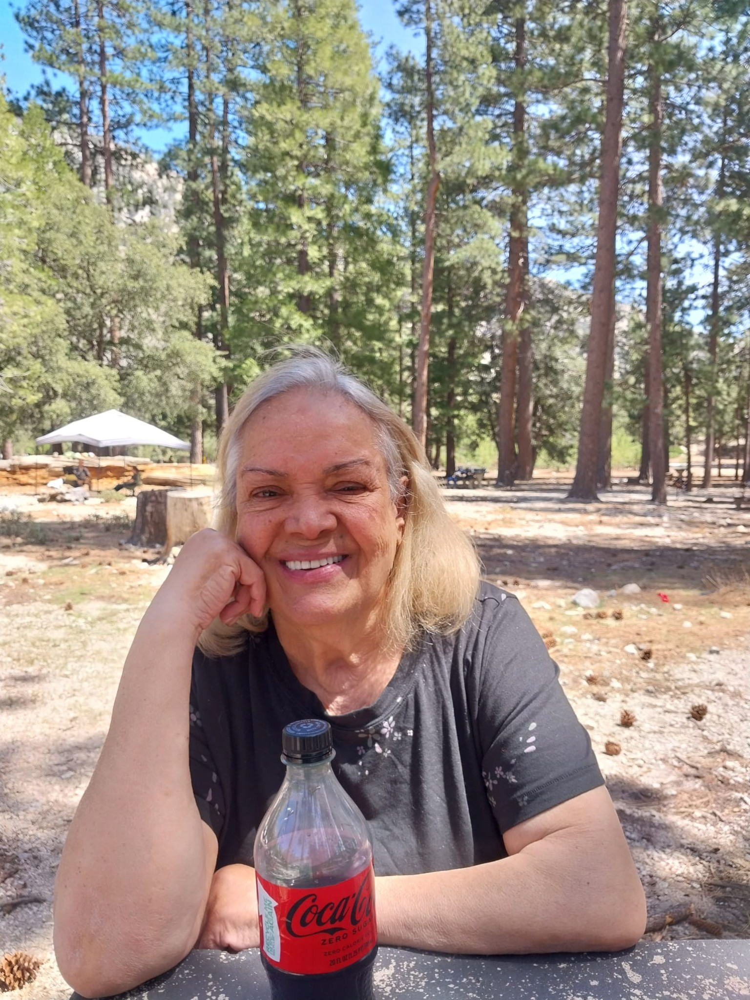
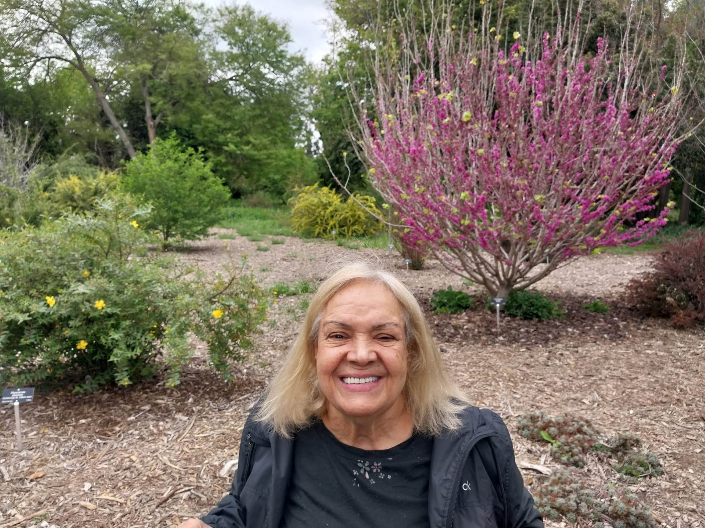
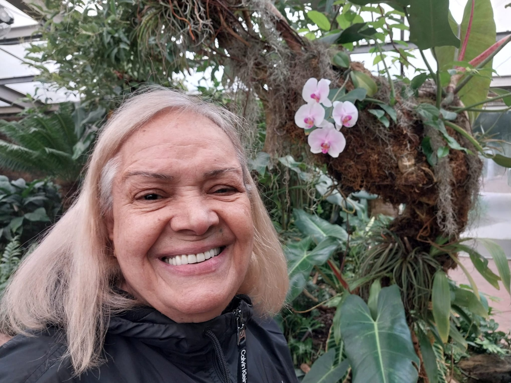
The Maryam Mottaghi Foundation is in its early stages. As it grows, it aims to build meaningful, carefully stewarded programs that reflect both urgent need and enduring impact.
Financial support for students and learners whose educational path has been hindered by hardship or lack of access.
Books, technology, educational materials, and practical assistance that make continued study possible.
Programs shaped around encouragement, guidance, and compassionate support for those facing difficult circumstances.
Your support helps establish and strengthen a foundation created in honor of a remarkable woman whose life was devoted to others. Contributions will help the foundation grow its educational and service-based efforts in Maryam’s memory.
The foundation intends to steward all support with care, transparency, and fidelity to its mission.
The Maryam Mottaghi Foundation is more than an organization. It is a living expression of remembrance — a way of ensuring that the love, sacrifice, and faith Maryam embodied continue to bless others. Every act of support, every opportunity made possible, and every life encouraged through this work stands as a testament to the beauty of her spirit.
For questions, partnership inquiries, or interest in supporting the foundation’s work, please use the contact details below.
This site is the foundation’s initial public presence and may continue to evolve as administrative approvals, donation workflows, and program details are finalized.